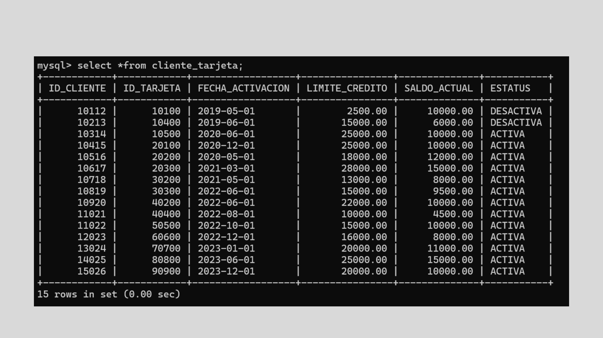

"Bienvenidos a mi portafolio"
Mi nombre es Nancy Alondra Testas Ascención, soy Ingeniera en Comunicación Multimedia con interés en el desarrollo tecnológico y la innovación. Cuento con conocimientos en bases de datos utilizando SQL, MySQL y phpMyAdmin, así como también con un nivel básico en programación web (HTML, CSS).
HABILIDADES
Algunas de mis habilidades técnicas en las que más me he desarrollado son en el desarrollo de bases de datos a través de SQL, MySQL y phpMyAdmin. Las cuales muestro a continuación:
Diseños de Páginas
Estos son algunos diseños de Páginas Web.
Diseños para Páginas y Redes Sociales
PROGRAMACIÓN
Aquí puedes encontrar más sobre desarrollos de la programación.